<ion-header>
  <ion-toolbar color="primary">
    <div class="logo-container">
      
    </div>
  </ion-toolbar>
</ion-header>
<ion-content>

  <router-outlet></router-outlet>

</ion-content>
<ion-toolbar color="primary" class="footerToolbar">
  <ion-icon (click)="toFood()" name="restaurant-outline"></ion-icon>
  <ion-icon (click)="toDrink()" name="wine-outline"></ion-icon>
  <ion-icon (click)="toCart()" name="cart-outline"></ion-icon>
</ion-toolbar>

